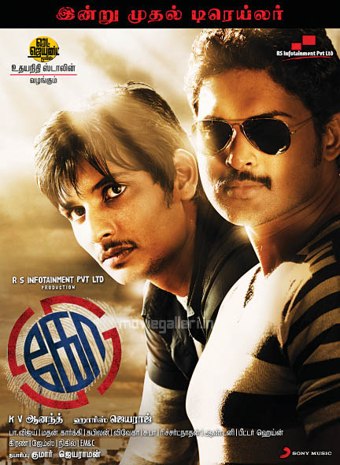

KO

Ko is a Tamil political action thriller film
Hero : Jiiva as Ashwin Kumar
Heroine : Karthika Nair as Renuka
Supporting role : Ajmai Amir as Vasanthan and Piaa Bajpai as Saraswathi
Director : K.V.Anand
Producer : Elred Kumar, Jayaraman
Writter : K.V.Anand, Subha
Music Composer : Harris Jayaraj
Editor : Anthony
Cinematography : Richard M. Nathan